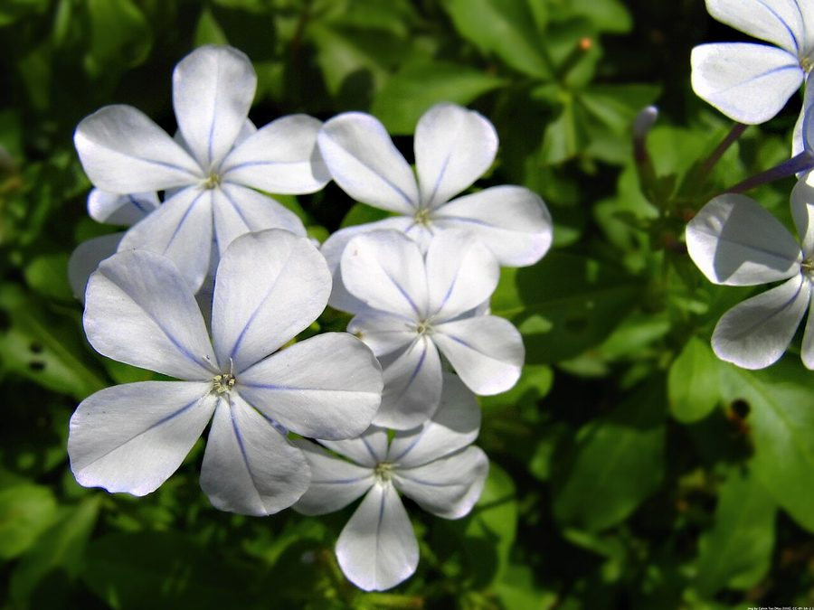

केप लेडवॉर्टCape Leadwort
Plumbago auriculata · Plumbaginaceae · FLR-0349

- Scientific name वैज्ञानिक नाम
- Plumbago auriculata Lam.
- Family कुल
- Plumbaginaceae
- Hindi हिंदी
- केप लेडवॉर्ट
- Local names स्थानीय नाम
- cape leadwort, neela chitrak, plumbago auriculata, blue plumbago, neel chitrak
- Status here यहाँ की स्थिति
- cultivated
- Movement आवागमन
- Resident, here all year
- Known from कहाँ दर्ज
- Others have published records from the wider Awadh–Purvanchal plain, none yet from Basti–Ayodhya अवध–पूर्वांचल से दूसरों के प्रकाशित अभिलेख, बस्ती–अयोध्या से अभी नहीं
- IUCN IUCN
- not evaluated
- Review समीक्षा
- not yet reviewed
When to look कब देखें
Present all year. साल भर मौजूद।
केप लेडवॉर्ट / Cape Leadwort
Plumbago auriculata Lam. — Plumbaginaceae
केप लेडवॉर्ट — बागीचों और दीवारों पर चढ़ने वाली एक बेहद खूबसूरत और आकाश जैसे नीले फूलों वाली झाड़ी। इसे आमतौर पर 'नीला चित्रक' भी कहा जाता है। इसके सिरों पर फ्लोक्स जैसे हल्के नीले फूलों के सुंदर गुच्छे खिलते हैं। फूलों के पीछे की नली (कैलिक्स) पर चिपचिपे रोएं होते हैं, जो कपड़ों और जानवरों के बालों पर चिपक जाते हैं।
Quick Identification त्वरित पहचान
| Feature | Description |
|---|---|
| Habit | Sprawling, scrambling, semi-woody evergreen perennial shrub |
| Leaves | Alternate, oblong-spathulate, pale green with small ear-like auricles at base |
| Flowers | Showy, sky-blue to pale violet, five-petaled, salverform in terminal racemes |
| Calyx | Tubular, green, covered in dense, stalked, viscid gland-tipped hairs |
| Adhesive Dispersal | Glandular calyx adheres readily to animal fur, clothing, and bird plumage |
Field tip: Look along sunny garden fences or trellises for a rambling shrub laden with phlox-like clusters of pale sky-blue flowers whose sticky green calyces cling to fingertips.
हिंदी — कैसे पहचानें: आकाश जैसे नीले रंग के सुंदर फूल, फूलों के नीचे चिपचिपे रोएं जो उंगलियों पर चिपक जाते हैं, और फैलने वाली झाड़ी।
Morphology आकारिकी
Shrub description: Scrambling, sprawling or climbing semi-woody evergreen shrub. Stems slender, ribbed, striate, glabrous, green, becoming woody at base. Leaves alternate, oblong-spathulate or obovate, apex obtuse or mucronulate, tapering into a short petiole; blade thin, pale green, glabrous; base of petiole flanked by two small, leafy, reniform ear-like appendages (auricles). Inflorescence a dense terminal raceme or spike; bracts ovate-lanceolate. Calyx tubular, five-ribbed, divided into five short teeth, densely clothed on outer surface with prominent stalked, sticky, glandular hairs. Corolla pale sky-blue, azure, or violet-blue; tube very slender, cylindrical; limb spreading into five broad, obovate, mucronate lobes. Stamens five, filaments dilated at base. Capsule oblong, five-valved.
हिंदी: यह एक फैलने वाली खूबसूरत झाड़ी है।
Behaviour & Ecology व्यवहार और पारिस्थितिकी
- Scrambling Growth: Uses spreading arching branches to scramble through supportive fencing, trellises, or neighbouring bushes.
- Epizoochory Dispersal: The stalked sticky glands on the calyx produce a tenacious viscid glue, causing whole spent fruits to hitchhike on animals.
- Butterfly Specialization: The long corolla tube holds sweet nectar accessible to skipper, pierid, and lycaenid butterflies.
- Insect Trapping: Small midges and aphids frequently get trapped and die on the glandular hairs of the calyx.
हिंदी: यह झाड़ियों और बाड़ों के सहारे फैलती है। इसके फूलों के चिपचिपे बाल जानवरों के रोओं पर चिपककर बीजों को दूर तक पहुंचाते हैं।
Life Cycle / Phenology जीवन चक्र
- Year-Round Flowering: Produces blue flower clusters in succession throughout the year, peaking from March to November.
- Winter Hardiness: Tolerates cool northern winters, continuing to bloom through mild sunny spells.
- Seed Setting: Small five-valved capsules mature within the sticky calyx, ripening in late autumn and winter.
- Vegetative Spread: Branches touching moist ground frequently root at nodes, creating expanding thickets.
हिंदी: यह लगभग पूरे साल खिलती है। इसकी टहनियां जमीन छूने पर जड़ें बना लेती हैं और नए पौधे तैयार हो जाते हैं।
Associated Species / Interactions संबंधित प्रजातियाँ
- Primary Butterfly Host: Sole larval host plant for the zebra blue butterfly (Leptotes plinius), whose caterpillars feed on flower buds.
- Butterfly Nectar Hub: Attracts common emigrants, yellow pansies, and swallowtail butterflies.
- Predator Refuge: Dense sprawling tangles provide shelter for spiders Indian garden lizards, often climbing near neem hedgerows.
हिंदी: जेब्रा ब्लू तितली की इल्लियां इसी के फूलों की कलियां खाकर बड़ी होती हैं। तितलियां इसका रस पीने आती हैं।
Pests and Diseases कीट और रोग
- Bud Borers: Zebra blue caterpillars bore directly into unopened flower buds, hollowing them out.
- Whiteflies: Occasionally colonize leaf undersides during warm humid post-monsoon weeks.
- Root Rot: Can suffer from fungal root rot if planted in heavy, waterlogged clay soil.
हिंदी: तितली की इल्लियां फूलों की कलियों में छेद कर देती हैं और जलजमाव होने पर जड़ें सड़ने लगती हैं।
Agricultural / Human Relevance कृषि प्रासंगिकता
- Ornamental Splendour: Highly celebrated garden plant worldwide for its rare, continuous sky-blue floral display.
- Living Hedge: Trained on bamboo frames and fences to create attractive, flowering privacy screens.
- Traditional Uses: Allied to native Plumbago zeylanica ('Chitrak') and used in folk remedies for muscular aches and skin sores.
हिंदी: इसे बागीचों और दीवारों पर सुंदरता के लिए लगाया जाता है। इसके दुर्लभ नीले फूल दर्शकों को बहुत आकर्षित करते हैं।
Expected Locally स्थानीय रूप से अपेक्षित
Not a field record. Written from published accounts for eastern Uttar Pradesh. No confirmed local sighting yet — if you have seen it, that is what the atlas needs.
अभी तक स्थानीय पुष्टि नहीं। यह विवरण प्रकाशित स्रोतों से है, किसी अवलोकन से नहीं।
Expected in scrubby wastelands, village hedgerows, and garden borders across Basti, Ayodhya, and neighbouring Awadh districts. GBIF holds published records from the wider Awadh–Purvanchal plain, none yet from Basti–Ayodhya. To confirm this species for the Atlas, provide a clear photograph showing flowers, leaves, and habit, along with date, time, and specific location.
Distribution वितरण
Global range: Native to South Africa; widely cultivated and naturalized across the tropical and subtropical regions of the world.
In India: Planted in gardens, parks, and residential compounds throughout India from the plains to the hills.
In Uttar Pradesh: Documented from botanical gardens, home landscapes, and public borders in Lucknow, Ayodhya, and Varanasi.
In Basti district / eastern UP: Expected on garden fences, school boundary trellises, and park borders across Basti and Ayodhya.
हिंदी: यह दक्षिण अफ्रीका का मूल पौधा है जो अब भारत के हर क्षेत्र के बागीचों में व्यापक रूप से उगाया जाता है।
Research Questions शोध प्रश्न
- How does zebra blue butterfly oviposition preference vary between blue and white cultivars? / जेब्रा ब्लू तितली नीले या सफेद फूलों वाली किस्मों में से किस पर अधिक अंडे देती है?
- What chemical compounds in the sticky calyx glands mediate adhesive attachment to feathers? / इसके चिपचिपे रोओं में कौन से रासायनिक तत्व होते हैं जो पक्षियों के पंखों पर चिपकने में मदद करते हैं?
- Does the presence of trapped insects on the calyx provide any nutritional absorption to the plant? / क्या कैलिक्स पर फंसे कीड़ों से पौधे को कोई पोषण मिलता है?
- How does winter pruning affect the abundance of spring floral flushes in Gangetic gardens? / सर्दियों में छंटाई करने से वसंत में फूलों की संख्या पर क्या प्रभाव पड़ता है?
- What is the foraging efficiency of long-tongued skipper butterflies on the narrow corolla tube? / तितलियां इसकी संकरी नली से मकरंद चूसने में कितनी कुशल होती हैं?
Similar Species मिलती-जुलती प्रजातियाँ
| Species | How to tell apart | हिंदी |
|---|---|---|
| Plumbago zeylanica | Native wild shrub; flowers pure white; leaf bases lack ear-like auricles | सफेद फूल, पत्तों के आधार पर कान जैसे हिस्से नहीं |
| Plumbago indica | Flowers brilliant scarlet-red; stems more erect; cultivated medicinal shrub | चमकीले लाल फूल, सीधा तना |
| Ceratostigma plumbaginoides | Low creeping perennial groundcover; flowers deep gentian blue; bristly leaves | जमीन पर रेंगने वाला पौधा, गहरे नीले फूल |
Field rule: A sprawling semi-woody shrub with auriculate leaf bases and terminal clusters of sky-blue flowers backed by sticky gland-toothed calyces identifies Plumbago auriculata.
Taxonomy & Classification वर्गीकरण
Original description. Described by Jean-Baptiste Lamarck in 1786 as Plumbago auriculata in Encyclopédie Méthodique, Botanique, vol. 2(1), p. 270.
Subspecies. Monotypic; Plumbago capensis Thunb. is a well-known junior synonym.
Family and order placement. Placed in the family Plumbaginaceae (leadwort family), subfamily Plumbaginoideae, in the order Caryophyllales.
IUCN status rationale. Not evaluated by the IUCN; abundant and secure globally across horticulture.
हिंदी: ज्यां-बैप्टिस्ट लैमार्क ने 1786 में इसका वैज्ञानिक विवरण दिया था। यह प्लंबैजिनेसी कुल का पौधा है।
Photo Gallery फोटो गैलरी
No photos yet — add field photos to media/species/cape_leadwort/ and run node scripts/sync_photos.js.
Photos needed आवश्यक फोटो
- [ ] Sky-blue flower cluster in full bloom (आकाश जैसे नीले फूलों का खिला हुआ गुच्छा)
- [ ] Close-up showing sticky glandular hairs on tubular calyx (कैलिक्स पर लगे चिपचिपे रोओं का क्लोज-अप)
- [ ] Zebra blue butterfly visiting blossoms (फूलों का रस पीती जेब्रा ब्लू तितली)
References संदर्भ
- Lamarck, J.-B. (1786). Encyclopédie Méthodique, Botanique, vol. 2(1), p. 270. Paris.
- Duthie, J.F. (1905). Flora of the Upper Gangetic Plain and of the Adjacent Siwalik and Sub-Himalayan Tracts, vol. 2, p. 11. Government of India, Calcutta.
- Hooker, J.D. (1882). The Flora of British India, vol. 3, p. 480. L. Reeve & Co., London.
- Brandis, D. (1906). Indian Trees: An Account of Trees, Shrubs, Woody Climbers, Bamboos and Palms, p. 415. Archibald Constable & Co., London.
- Kirtikar, K.R. & Basu, B.D. (1935). Indian Medicinal Plants, vol. 2, p. 1468. Lalit Mohan Basu, Allahabad.
- GBIF Occurrence Data — Plumbago auriculata Lam., India (2025).
Source file: species/flora/shrubs/cape_leadwort.md